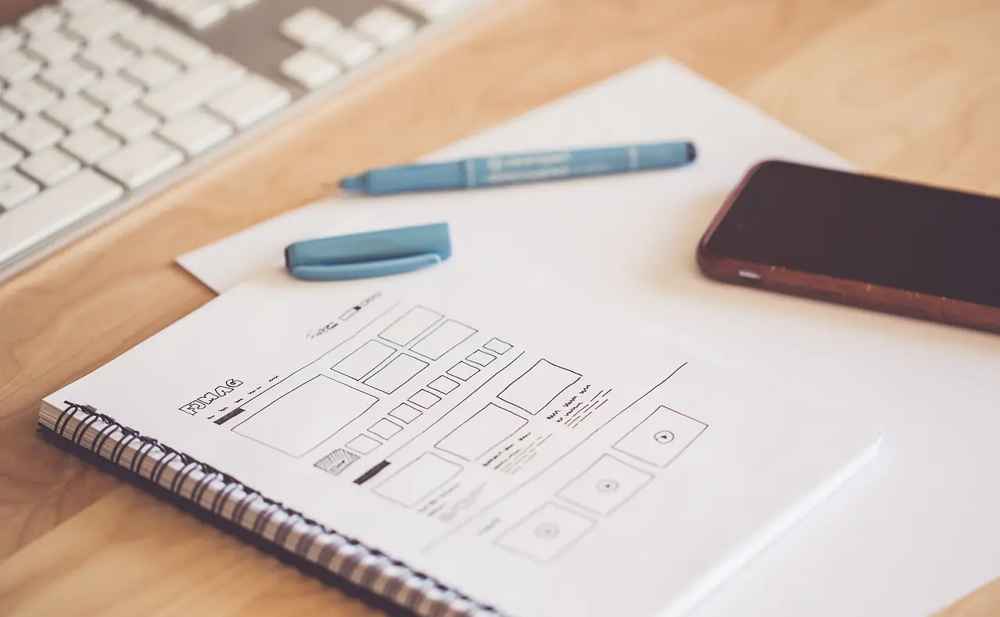

Landing page
Landing page khác website thế nào? Khi nào cần landing page, khi nào cần website?
Hai thứ trông giống nhau trên màn hình nhưng làm hai việc khác nhau. Bài này so sánh theo từng tiêu chí, đưa ví dụ theo ngành và giúp bạn quyết định nên làm cái nào trước.

Landing page khác website ở mục tiêu: landing page là một trang duy nhất phục vụ một chiến dịch và dẫn khách tới đúng một hành động như để lại số điện thoại, đặt lịch hay mua hàng; website là nhiều trang giới thiệu toàn bộ doanh nghiệp, giúp khách tìm hiểu và giúp bạn có khách từ Google lâu dài. Nếu bạn sắp chạy quảng cáo cho một sản phẩm cụ thể, hãy làm landing page trước; nếu bạn cần được tìm thấy, được tin tưởng và có nhiều dịch vụ để giới thiệu, bạn cần website.
Phần lớn doanh nghiệp đang lớn dần sẽ cần cả hai, chỉ khác nhau ở thứ tự. Bài này đi qua từng tiêu chí so sánh, các tình huống nên chọn cái nào, cách cho hai thứ chạy cùng nhau và những sai lầm khiến tiền quảng cáo bị lãng phí. Nếu bạn đã quyết làm landing page và muốn biết bố cục chi tiết, hãy đọc thêm bài thiết kế landing page bán hàng chuyển đổi cao.
Landing page và website, hiểu cho đúng
Landing page (trang đích) là trang mà khách "đáp xuống" sau khi bấm vào một quảng cáo, một tin nhắn hay một đường link trong email. Trang chỉ nói về một chuyện: một sản phẩm, một gói dịch vụ, một ưu đãi hoặc một sự kiện. Thường không có menu, không có đường dẫn sang các trang khác, mọi khối nội dung đều dẫn về một nút hoặc một form.
Website là tập hợp nhiều trang dưới cùng một tên miền: trang chủ, giới thiệu, sản phẩm hoặc dịch vụ, bài viết, liên hệ. Khách có thể đi theo nhiều hướng tùy nhu cầu. Website là "địa chỉ" lâu dài của doanh nghiệp trên mạng, nơi Google lập chỉ mục và đưa khách tìm kiếm tới.
Một điểm hay gây nhầm: landing page không nhất thiết phải tách khỏi website. Một trang ưu đãi nằm trong website của bạn, bỏ menu và chỉ có một nút đặt lịch, vẫn là landing page. Ngược lại, một trang chủ đầy đủ nhưng chỉ có một trang cuộn dài vẫn là website nếu nó làm nhiệm vụ giới thiệu chung. Cái phân biệt là mục tiêu và cách dẫn dắt, không phải số trang hay công cụ làm ra nó.

So sánh landing page và website theo 9 tiêu chí
Bảng dưới gom những khác biệt chính mà chủ doanh nghiệp hay hỏi. Đây là đặc điểm điển hình, mỗi dự án cụ thể có thể khác một chút.
| Tiêu chí | Landing page | Website |
|---|---|---|
| Mục tiêu | Một hành động: để lại số, đặt lịch, mua | Giới thiệu doanh nghiệp, nhiều mục tiêu |
| Số trang | Một trang cuộn dài | Nhiều trang, có menu |
| Nguồn khách chính | Quảng cáo Facebook, TikTok, Google, Zalo, email | Tìm kiếm Google, khách gõ tên thương hiệu, giới thiệu |
| Thời gian sống | Theo chiến dịch, vài tuần đến vài tháng | Nhiều năm, cập nhật dần |
| Nội dung | Ngắn, tập trung lợi ích và ưu đãi | Đầy đủ: sản phẩm, giới thiệu, bài viết, chính sách |
| SEO | Không phải mục tiêu chính | Là kênh khách hàng lâu dài |
| Đo lường | Theo tỷ lệ chuyển đổi của chiến dịch | Theo lượng truy cập, nguồn khách, liên hệ |
| Thời gian làm | Vài ngày đến khoảng 10 ngày | Từ khoảng 10 ngày đến vài tuần |
| Chi phí | Thấp hơn | Cao hơn, có thêm chi phí duy trì |
Từ bảng này có thể rút ra một nguyên tắc đơn giản: landing page để bán trong chiến dịch, website để được tìm thấy và được tin. Hai việc bổ trợ nhau chứ không thay thế nhau.
Khi nào chỉ cần landing page
Landing page là lựa chọn hợp lý khi bạn cần kết quả nhanh và đo được từ một chiến dịch cụ thể. Những tình huống điển hình:
- Sắp chạy quảng cáo cho một sản phẩm hoặc một ưu đãi. Ví dụ gói trị liệu mùa cưới của spa, một dự án căn hộ, khóa học khai giảng tháng tới. Đưa khách từ quảng cáo về trang chủ khiến họ phải tự tìm, nhiều người bỏ đi giữa chừng.
- Mới bán một hai sản phẩm, chưa có nhiều thứ để giới thiệu. Làm website nhiều trang lúc này dễ thành những trang trống hoặc trùng nội dung.
- Muốn thử thị trường trước khi đầu tư lớn. Một trang giới thiệu sản phẩm mới, chạy quảng cáo nhỏ, xem bao nhiêu người để lại số, rồi mới quyết định sản xuất lô lớn hay làm website.
- Sự kiện có ngày bắt đầu và kết thúc. Hội thảo, workshop, khai trương, chương trình khuyến mãi theo mùa.
- Thu thông tin khách cho đội tư vấn gọi lại. Bất động sản, giáo dục, nha khoa, nội thất là những ngành bán qua tư vấn, landing page có form ngắn là đủ để bắt đầu.
Lưu ý: nếu bạn chạy quảng cáo dạng tin nhắn, khách nhắn thẳng vào Fanpage hoặc Zalo, thì landing page không bắt buộc. Nhưng khi cần khách đọc kỹ thông tin trước khi liên hệ, hoặc cần đo chuyển đổi bằng Pixel và GA4, một landing page vẫn giúp lọc khách tốt hơn. Bài landing page chạy quảng cáo Facebook, TikTok nói kỹ về phần gắn mã đo lường.
Khi nào cần website
Website trở nên cần thiết khi doanh nghiệp muốn có khách đều đặn mà không phải trả tiền cho từng lượt bấm, hoặc khi khách cần kiểm tra bạn trước khi mua.
- Có nhiều sản phẩm hoặc dịch vụ. Một nhà hàng có thực đơn, một xưởng nội thất có nhiều dòng sản phẩm, một phòng khám có nhiều dịch vụ cần mỗi thứ một trang để khách tìm đúng cái mình cần.
- Muốn có khách từ Google. Người tìm "spa gần đây", "báo giá tủ bếp gỗ" hay "học tiếng Anh giao tiếp cho người đi làm" thường được dẫn tới những trang có nội dung chi tiết và cập nhật lâu dài. Một landing page chạy ba tháng rồi tắt khó giữ được vị trí đó.
- Khách cần tin trước khi mua. Khách doanh nghiệp, đối tác phân phối, khách mua hàng giá trị cao thường tìm tên thương hiệu trên Google, xem trang giới thiệu, chính sách bảo hành, địa chỉ, rồi mới liên hệ.
- Bán hàng trực tuyến có giỏ hàng, thanh toán. Việc này cần cấu trúc nhiều trang và hệ thống quản lý đơn.
- Hướng tới khách nước ngoài. Website đa ngôn ngữ là nơi đối tác xuất khẩu kiểm tra năng lực doanh nghiệp.
Xem thêm các gói tại trang thiết kế website nếu bạn đang ở giai đoạn này.
Khi nào cần cả hai, và cho chúng chạy cùng nhau thế nào
Khi doanh nghiệp đã có website và bắt đầu chạy quảng cáo đều đặn, cách làm phổ biến là: website giữ vai trò nền, mỗi chiến dịch lớn có một landing page riêng. Một vài cách kết hợp thực tế:
Đặt landing page dưới tên miền của website
Thay vì dùng tên miền miễn phí của công cụ kéo thả, hãy đặt landing page ở dạng tenmien.vn/uu-dai-thang-12/ hoặc một tên miền phụ như uudai.tenmien.vn. Khách thấy tên miền quen sẽ yên tâm hơn, và dữ liệu đo lường gom về một chỗ.
Ẩn landing page khỏi kết quả tìm kiếm khi cần
Landing page chỉ dành cho khách từ quảng cáo, nội dung lại gần giống trang dịch vụ trên website, thì nên đặt chế độ không lập chỉ mục để tránh hai trang của chính bạn cạnh tranh nhau trên Google. Trang dịch vụ trên website mới là trang bạn muốn khách tìm thấy lâu dài.
Cho khách lối quay về khi cần
Landing page vẫn nên có thông tin doanh nghiệp ở chân trang: tên, địa chỉ, số điện thoại, liên kết chính sách. Không cần menu, nhưng khách muốn kiểm tra thì phải tìm được. Điều này cũng giúp quảng cáo dễ được duyệt hơn vì nhiều nền tảng yêu cầu trang đích có thông tin minh bạch.
Dùng chung một hệ đo lường
Gắn cùng một tài khoản Google Analytics 4 và Facebook Pixel trên cả website và landing page, đặt tham số UTM cho từng chiến dịch. Bạn sẽ biết khách đến từ đâu, đi qua trang nào và chuyển đổi ở đâu.
Ví dụ minh họa theo ngành
Các ví dụ dưới đây là tình huống giả định để minh họa cách chọn, không phải khách hàng thật của Dream Labs.
Spa mới mở ở một quận trung tâm
Spa có một chi nhánh, năm gói dịch vụ, ngân sách quảng cáo nhỏ. Việc gấp nhất là có khách đặt lịch trong tháng khai trương. Lựa chọn hợp lý: một landing page cho gói trải nghiệm khai trương, form đặt lịch báo về Zalo. Khi đã có khách quen và muốn được tìm thấy khi khách gõ "spa gần đây", mới làm website có trang cho từng dịch vụ. Tham khảo trang landing page cho spa.
Chủ đầu tư một dự án căn hộ
Mỗi dự án có thời gian mở bán riêng, thông điệp riêng, nhóm khách riêng. Mỗi dự án nên có một landing page, còn website công ty giới thiệu năng lực, các dự án đã làm và tin tức. Khách quan tâm thường tìm tên chủ đầu tư trên Google, nên website là nơi họ kiểm tra uy tín.
Cơ sở sản xuất đặc sản bán qua Shopee và Facebook
Sản phẩm đã có trên sàn, khách mua lẻ đặt qua sàn là chính. Website lúc này để giới thiệu nguồn gốc, quy trình sản xuất, phục vụ khách sỉ và đại lý. Landing page dùng khi chạy chiến dịch quà Tết cho khách doanh nghiệp, cần form nhận báo giá số lượng lớn.
Trung tâm ngoại ngữ
Trung tâm có nhiều khóa học, khai giảng liên tục. Website là nơi đặt lịch khai giảng, giới thiệu giáo viên, bài viết kinh nghiệm học để có khách từ Google. Mỗi đợt chạy quảng cáo cho một khóa cụ thể, như khóa luyện thi hay khóa cho trẻ em, đi kèm một landing page có form kiểm tra trình độ miễn phí.
5 câu hỏi để tự quyết định nên làm cái nào trước
- Trong 3 tháng tới bạn có chạy quảng cáo trả phí không? Có thì landing page nên làm trước hoặc làm cùng lúc.
- Bạn có bao nhiêu sản phẩm, dịch vụ cần giới thiệu? Một hai thứ thì landing page đủ cho giai đoạn đầu; từ bốn năm thứ trở lên thì cần website để khách tìm đúng.
- Khách của bạn có tìm trên Google trước khi mua không? Nếu có, website với nội dung tốt là khoản đầu tư dài hạn đáng làm.
- Ai sẽ xử lý khách để lại thông tin? Landing page tạo ra danh sách khách cần gọi lại. Nếu chưa có người gọi lại trong ngày, hãy chuẩn bị quy trình trước khi chạy quảng cáo.
- Ngân sách và thời gian bạn có là bao nhiêu? Landing page làm trong vài ngày, chi phí thấp hơn. Website cần nhiều tuần và có chi phí duy trì tên miền, hosting hằng năm.
Nếu câu trả lời vẫn chưa rõ, cách ít rủi ro nhất là bắt đầu bằng một landing page cho sản phẩm chủ lực, đo kết quả vài tuần, rồi dùng chính nội dung và số liệu đó làm nền cho website.
Sai lầm thường gặp
- Chạy quảng cáo về trang chủ. Khách bấm vào quảng cáo ưu đãi nhưng thấy trang chủ chung chung, phải tự đi tìm. Mỗi chiến dịch nên có trang đích khớp thông điệp.
- Biến landing page thành website thu nhỏ. Thêm menu, thêm năm sản phẩm, thêm tin tức. Khách bị phân tâm và mục tiêu chuyển đổi bị loãng.
- Coi landing page là website lâu dài. Một trang bán hàng khó thay được website khi khách muốn kiểm tra doanh nghiệp, đối tác cần hồ sơ năng lực, hoặc bạn muốn có khách từ Google.
- Để landing page ở tên miền miễn phí của công cụ. Đường link dài, lạ, khách dễ nghi ngờ, và bạn phụ thuộc vào nền tảng đó.
- Không gắn mã đo lường. Không có Pixel, GA4 và UTM thì không biết quảng cáo nào hiệu quả, dễ dừng nhầm chiến dịch tốt.
- Tắt landing page ngay khi hết chiến dịch mà không lưu lại số liệu. Tỷ lệ chuyển đổi, câu hỏi khách hay hỏi, khối nội dung nào được xem nhiều là tài sản cho lần sau.
Nếu bạn đang cân nhắc tự làm landing page bằng công cụ kéo thả hay thuê thiết kế, bài tự làm landing page hay thuê thiết kế so sánh chi tiết chi phí và công sức của hai cách.
Chi phí landing page và website tại Dream Labs
Landing page tại Dream Labs có ba gói. Gói Cơ bản 3.000.000đ gồm một trang 6–8 khối nội dung, form thu khách về Google Sheets, gắn sẵn Facebook Pixel và GA4. Gói Chuyên nghiệp 6.000.000đ thiết kế riêng 10–12 khối, có viết nội dung bán hàng và báo khách mới qua Zalo hoặc email. Gói Cao cấp 12.000.000đ có hai phiên bản để thử A/B, báo cáo chuyển đổi hằng tuần và tối ưu lại sau 30 ngày.
| Gói | Giá | Thời gian | Bao gồm |
|---|---|---|---|
| Cơ bản | 3.000.000đ | 3–5 ngày4 vòng sửa | Có ngay trang đích để chạy quảng cáo và biết mỗi khách tiềm năng đến từ đâu.
|
| Chuyên nghiệpPhổ biến nhất | 6.000.000đ | 5–7 ngày9 vòng sửa | Nội dung bán hàng viết sẵn, khách để lại số được báo về Zalo để gọi lại khi còn nóng: tận dụng tốt hơn từng đồng quảng cáo.
|
| Cao cấp | 12.000.000đ | 7–10 ngày18 vòng sửa | Quyết định bằng số liệu thật: thử hai phiên bản, theo dõi hằng tuần, tối ưu lại sau 30 ngày.
|
Website bắt đầu từ 8.000.000đ cho gói Cơ bản 5 trang. Xem chi tiết tại trang thiết kế landing page, các mẫu landing page và bảng giá đầy đủ. Bạn chưa chắc nên làm cái nào trước, hãy nhắn Zalo 0934 246 420 kèm sản phẩm và kế hoạch quảng cáo, Dream Labs sẽ gợi ý thứ tự hợp lý.
Câu hỏi thường gặp
Landing page có phải là website không?
Về kỹ thuật, landing page là một trang web, có thể nằm trong website hoặc đứng riêng. Khác biệt nằm ở mục tiêu: landing page phục vụ một chiến dịch với một hành động duy nhất, còn website giới thiệu toàn bộ doanh nghiệp với nhiều trang và nhiều lối đi.
Đã có website rồi có cần làm thêm landing page không?
Cần, nếu bạn chạy quảng cáo cho một sản phẩm hoặc ưu đãi cụ thể. Trang chủ phải phục vụ nhiều loại khách nên khó tập trung vào một hành động. Landing page riêng giúp thông điệp khớp với quảng cáo và đo chuyển đổi rõ ràng hơn.
Chỉ có landing page thì có lên Google được không?
Có thể, nhưng khó giữ vị trí lâu dài vì một trang có ít nội dung và thường chỉ chạy theo chiến dịch. Muốn có khách từ tìm kiếm đều đặn, bạn cần website với nội dung chi tiết cho từng sản phẩm, dịch vụ và được cập nhật thường xuyên.
Landing page nên dùng tên miền riêng hay tên miền của website?
Nên dùng tên miền của website, dạng đường dẫn con hoặc tên miền phụ. Khách thấy tên miền quen sẽ tin hơn, dữ liệu đo lường gom về một chỗ, và bạn không phụ thuộc vào tên miền miễn phí của công cụ tạo trang.
Làm landing page mất bao lâu, website mất bao lâu?
Landing page thường mất từ 3 đến 10 ngày tùy gói và độ sẵn sàng của nội dung, hình ảnh. Website mất từ khoảng 7–10 ngày cho bản cơ bản đến vài tuần cho bản thiết kế riêng nhiều trang hoặc đa ngôn ngữ.
Có thể biến landing page thành website sau này không?
Có. Nội dung, hình ảnh và số liệu từ landing page là nền tốt cho trang sản phẩm trên website. Nếu landing page được làm trên công cụ kéo thả, phần thiết kế thường phải dựng lại khi chuyển sang website, nhưng nội dung và bài học chuyển đổi vẫn dùng được.
Nguồn ảnh: ảnh 2: Christina Morillo / Pexels · ảnh 1: picjumbo.com / Pexels · ảnh bìa: Davide Baraldi / Pexels. Ảnh dùng theo giấy phép miễn phí của Pexels, chỉ mang tính minh họa.
Bắt đầu cùng Dream Labs
Chưa chắc nên làm landing page hay website trước?
Nhắn Zalo cho Dream Labs sản phẩm, kênh bán và kế hoạch quảng cáo của bạn. Chúng tôi gợi ý nên làm cái nào trước và báo giá theo đúng phạm vi.